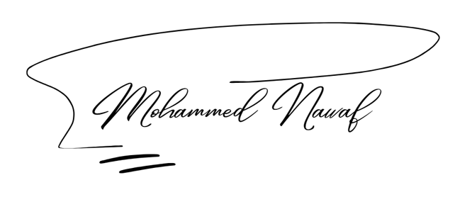

Mohammed Nawaf


Beyond Where I Am Today
I always strive to go beyond where I am today. I set higher standards for myself, challenge the limits of my abilities, and keep working to develop myself and become better.
See how I put this into practiceWork I can show you
Cybersecurity GRC & NCA Toolkit
17 Jul – 17 Oct 2026What I Delivered
The question behind this project was simple: can a reviewer move from a security control to its assessment, evidence, risk, and next action? I created two complementary Excel workbooks. The general GRC file organizes registers for controls, risks, audit findings, and follow-up. The NCA file adds a sourced control library with assessment, evidence-link, action, and risk views.
The value
The NCA workbook includes 897 control-library entries across eight frameworks. Its dashboards separate assessment coverage, declared implementation, and evidence-backed implementation. The general workbook provides registers and analytics for entered records. These tools support review; an organization must validate scope and mappings before using them to assess compliance.
Task Management & Governance System
Oct 2025 – Feb 2026What I Delivered
The question behind this project was simple: can a team see who owns each task and what is holding it up? I built a shared view of task ownership, approvals, and performance for employees, teams, and the General Administration. It has five access roles, including an independent auditor who can review without changing the workflow.
The value
Overdue and returned tasks became easier to spot, and the approval trail became easier to follow. Reporting includes three separate PDFs and one Excel workbook with three sheets. It saved about 20 minutes of manual preparation per report; I also tested it with more than 8,000 task records.
Agri Zone | Agricultural Marketplace
Apr 2024 – May 2025What I Delivered
The question behind this graduation project was simple: can agricultural buyers and sellers connect directly without a broker in the platform flow? I contributed to the PHP backend and database, and helped plan and coordinate the team’s tasks.
The value
The result was a marketplace flow that lets buyers reach sellers directly and makes the available agricultural offerings easier to find. My contribution centered on the platform’s technical foundation and team coordination.
Where I have worked
- The practical question was how to keep NCA-related security records accurate and ready for review. I reviewed and audited 100+ cybersecurity reports and documents for the General Administration, checking information accuracy and documentation quality.
- I supported NCA-related requirements and cybersecurity governance activities, including initiatives tied to the transition to an independent General Administration.
The output was reviewed security documentation and a shared system for following tasks, permissions, and reports, supporting clearer NCA-related follow-up.
- The question in daily IT support was simple: how can employees get back to work when a device or application interrupts them? I supported 20+ employees by troubleshooting hardware and software issues.
- I also monitored enterprise networks and addressed technical issues to support reliable day-to-day IT services.
Employees were able to resume work after troubleshooting, while network issues were addressed to keep services available.
My Skills
Cybersecurity & GRC
Security Tools
SOC Operations
IT Support & Systems Administration
Education
Bachelor's Degree in Information Systems
College of Computer Science
Credentials & Knowledge
Cybersecurity Specialization
King Khalid University
Professional Certificate in Cybersecurity
IBM
77 hours of learning across six cybersecurity topics:
Application of ATT&CK Navigator
AttackIQ Academy